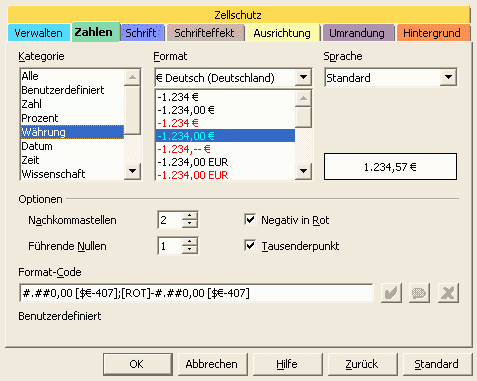
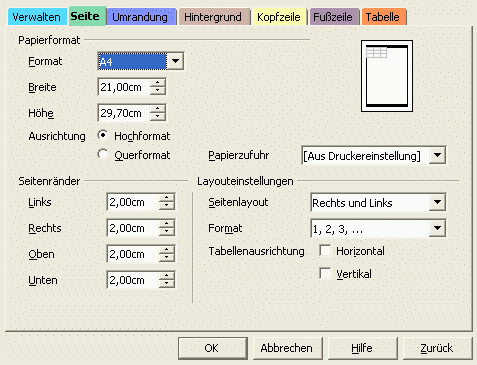

Diese Anleitung bezieht sich auf die Programmversion 1 von OpenOffice.org. Die vollständige Liste aktueller Dokumentationen finden Sie im Dokumentationsportal.
Wie Sie ein Tabellenblatt formatieren
herausgegeben vom 'OpenOffice.org Documentation Project'
Inhaltsverzeichnis:
-
auf eine Zelle/ einen Zellbereich
auf eine Seite
1. Aufsetzen einer Formatierung
A. --auf eine Zelle/einen Zellbereich
Öffnen des Stylisten:
Wählen Sie Format -Stylist,
oder drücken Sie F11,
oder klicken Sie auf das Icon
 in der Funktionsleiste.
in der Funktionsleiste.
Im Stylist-Fenster gibt es verschiedene vorgefertigte Gestaltungsarten. Sie können die Standard-Formatierung so verändern wie Sie es wünschen:
- Wählen Sie die Standard-Formatierung
- Klicken Sie mit der rechten Maustaste, um das Kontextmenü aufzurufen
- Wählen Sie Ändern...
alternativ: Rufen Sie mit einem Rechtsklick auf einen markierten Bereich in der Tabelle/Tabellenblatt das entsprechende Kontextmenü auf, wählen Sie Zellen formatieren aus, um das Einstellungsfenster direkt zu erreichen. Aber eine neue Zellvorlage müssen Sie über den Stylisten anlegen.
Dieses
neue Fenster umfasst alle Einstellungen, die Sie benötigen, um
Ihre Zellen zu formatieren, also für die Schriftarten, die
Ausrichtungen oder die Zahlen. Tatsächlich wird letzte
Einstellung am meisten benutzt.
Auf der Registerkarte Zahlen finden Sie links verschiedene Kategorien für Zahlen, unter anderem auch Währungen. Hier können Sie auswählen, mit welcher Währungseinheit Sie arbeiten wollen. Unten können Sie sehen, was angezeigt wird, wenn Sie auf diese Kategorie klicken:

Ein
Kasten, genannt Format, wird angezeigt. Wählen Sie Ihre
Währung aus. Rechts sehen Sie sofort ein Zahlenbeispiel. Es ist
in der Sprache, die Sie bei der Installation von Open Office
ausgewählt haben.
Unter 'Optionen' können Sie einstellen, wie viele Nachkommastellen angezeigt werden sollen, in welcher Farbe die Negativzahlen dargestellt werden usw.
Wenn Sie ausgewählt haben, klicken Sie auf den OK-Button. Alle Zellen mit Standard-Formatierung werden jetzt auf die neuen Einstellungen geändert.
Hinweis: Wenn Sie mit dem Format einiger Zellvorlagen nicht einverstanden sind, markieren Sie einen beliebigen Einstellungsnamen im Stylisten, klicken mit der rechten Maustaste darauf und wählen Sie Neu.... Auf diese Art können Sie Ihren eigenen Stil anlegen. Wiederholen Sie dieselben Vorgänge, die Sie vielleicht auch bei der Änderung des Standard-Formats durchgeführt haben. Dann geben Sie Ihrer neuen Voreinstellung in der Registerkarte 'Verwaltung' einen Namen. Wenn Sie nun auf OK klicken, erscheint der Name der Einstellung im Stylisten. Um die neue Formateinstellung auf eine oder mehrere Zellen anzuwenden, markieren Sie den betreffenden Bereich und doppelklicken Sie auf den Einstellungsnamen im Stylisten.
B. --auf eine Seite
Noch einmal passiert alles innerhalb des Stylisten.
Klicken Sie auf das zweite Icon im Stylisten, um die 'Seitenvorlagen' aufzurufen.
Klicken Sie rechts auf 'Standard' und wählen Ändern...
alternativ: Menü Format - Seite.
Das Fenster, das nun erscheint, besitzt einige neue Registerkarten:

Merke:
Hier können Sie die Kopf- und Fußzeilen Ihres
Tabellenblatts sowie die Hintergrundfarbe einstellen.
Stattdessen widmen wir uns der Registerkarte 'Seite' :
In der Rubrik Papierformat können Sie nicht nur die Papiergröße auswählen, sondern auch die Ausrichtung. Die Änderungen können Sie in der Miniatur-Vorschau auf der rechten Seite betrachten.
In der Rubrik Seitenränder können Sie die Größe der Seitenränder einstellen. Wenn Sie die Ränder außerhalb des Druckbereichs einstellen, werden Sie durch eine Mitteilung gewarnt.
In den Layouteinstellungen können Sie bei 'Seitenlayout' auswählen, wie Sie den Zelleninhalt auf dem Tabellenblatt ausrichten möchten.
Untersuchen wir nun eine andere, sehr interessante Registerkarte: die Tabelle
Sie
erklärt sich praktisch von selbst, bis auf die Rubrik
Skalieren. Sie ist
vielleicht etwas schwer zu verstehen.
'Ausdruck vergrößern/verkleinern' ermöglicht Ihnen, den Ausdruck Ihrer Tabelle zu vergrößern oder zu verkleinern.
'Ausdruck auf Seitenzahl anpassen' erlaubt Ihnen, die exakte Zahl der Druckseiten vorzugeben. Die Größe des Druckbildes wird so angepasst, dass später die Anzahl der Seiten genau Ihrer Vorgabe gemäß eingehalten wird.
2. Verwenden der AutoFormat-Funktion
Achtung: Um diese Funktion zu nutzen, müssen Sie einen Bereich auf dem Tabellenblatt, den Sie formatieren wollen, markieren. Diese Funktion ist nicht für eine oder zwei Zellen, sondern für einen ganzen Abschnitt gedacht.
Sie können auf das 'AutoFormat' im Menü unter
Format zugreifen oder dieses Icon
 anklicken, das Sie in der Funktionsleiste auf der linken Seite Ihres
Bildschirms finden.
anklicken, das Sie in der Funktionsleiste auf der linken Seite Ihres
Bildschirms finden.
Unglaublich!
Es scheint, als ob die ganze Vorlagenarbeit automatisch durchgeführt
wurde! :-)
Sie müssen lediglich auf den Formatnamen klicken, um auszuwählen, was Sie bevorzugen!
Natürlich können Sie auch Ihr eigenes Format schaffen (den Hinzufügen....-Button finden Sie rechts) und, eventuell, löschen, wenn Sie der Meinung sind, dass das Design aus der Mode ist!
Klicken Sie auf Zusätze, um einige zusätzliche Einstellungen vorzunehmen. Wenn Sie diese ändern, wird Ihnen eine Vorschau im AutoFormat-Fenster dargestellt.
Hinweis: Wenn Sie eine Einstellung von AutoFormat rückgängig machen möchten, markieren Sie den Bereich, auf den Sie die Formatierung angewendet haben, klicken Sie mit der rechten Maustaste darauf und wählen Sie im Kontextmenü 'Standard'.
3. Benutzung der Gallery-Themen
Die Gallery-Themen bestehen aus einer Sammlung von Zellformaten und Themen, deren Einstellungen fixiert sind. Die Formatierung ist jedoch austauschbar.
Und so funktioniert's:
Öffnen Sie die Gallery: Menüpunkt Extras – Gallery.
Klicken Sie auf das Icon 'Themenauswahl' auf der linken Seite Ihres Bildschirms. Es befindet sich genau unterhalb des AutoFormat-Icons.
Wählen Sie das 'Blue jeans'-Thema im Auswahlfenster und klicken Sie auf OK.
Beachten Sie die Zellvorlagen des Stylisten.
Ihre Seite wird nach dem ausgewählten Thema verändert.
Markieren Sie einen Bereich und doppelklicken Sie nun auf die Zellvorlage im Stylisten, um zu sehen, wie diese dargestellt wird. Modifizieren Sie diese eventuell, um Ihre Seitennummerierung zu ändern.
Um diese Themen zu nutzen, ist es notwendig, ein bisschen über sie zu lernen. Es ist jedoch sehr einfach!
4. Mitwirkende
Autor: Sophie Gautier
Deutsche Übersetzung: RPK Kempten
Letzte Änderung: 18. Dezember 2002
Kontakt:
OpenOffice.org Documentation Project
documentation.openoffice.org
OpenOffice.org auf Deutsch
de.openoffice.org
| [zurück] | [Hauptmenü] | [weiter] |
| [PDF] | ||